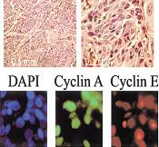

Reviewed publications:
-
Morphological Features Extracted by AI Associated with Spatial Transcriptomics in Prostate Cancer.
Cancers, doi: 10.3390/cancers13194837, Sept 21. 2021.
-

ImageJ and CellProfiler: Complements in Open-Source Bioimage Analysis.
PLoS Genetics, doi: 10.1371/journal.pgen.1009736, Sept 7. 2021.
-
Artificial Intelligence for Diagnosis and Gleason Grading of Prostate Cancer in Biopsies - Current Status and Next Steps.
European Urology Focus 7(4) p687-691, doi: 10.1016/j.euf.2021.07.002, July 2021.
-
Machine learning for cell classification and neighborhood analysis in glioma tissue.
Cytometry, doi: 10.1002/cyto.a.24467, June 4. 2021.
-
ImageJ and CellProfiler: Complements in Open-Source Bioimage Analysis.
Curr Protoc.1(5):e89., doi: 10.1002/cpz1.89, May 2021.
-
Rapid development of cloud-native intelligent data pipelines for scientific data streams using the HASTE Toolkit.
Gigascience 10(3), doi: 10.1093/gigascience/giab018, Feb. 2021.
-
Deep learning models for lipid-nanoparticle-based drug delivery.
Accepted for publication in Nanomedicine in March 2021, currently available herehttps://doi.org/10.1101/2020.04.06.027672, April 2020.
-
TEM image restoration from fast image streams.
PlosONE, https://doi.org/10.1371/journal.pone.0246336, Feb 2021.
-
CoMIR: Contrastive Multimodal Image Representation for Registration.
In proceedings of Neural Information Processing Systems 2020 (NeurIPS 2020), Nov. 2020.
-
Automated identification of the mouse brain’s spatial compartments from in situ sequencing data.
BMC Biology, doi.org/10.1186/s12915-020-00874-5, Oct 2020.
-
Spage2vec: Unsupervised representation of localized spatial gene expression signatures
FEBS Journal, doi: 10.1111/febs.15572, Sept 2020.
-
Regular use of depot medroxyprogesterone acetate causes thinning of the superficial lining and apical distribution of HIV target cells in the human ectocervix.
The Journal of Infectious Diseases, doi: 10.1093/infdis/jiaa514 Aug 2020.
-
Graph-based image decoding for multiplexed in situ RNA detection.
To appear in the proceedings of the International Conference on Pattern Recognition (ICPR), 2020. A pre-publication with similar content can be found here; Permanent arXiv identifier: 1802.08894.
-
Towards automatic protein co-expression quantification in immunohistochemical TMA slides.
IEEE Journal of Biomedical and Health Informatics, doi:10.1109/JBHI.2020.3008821, July 2020.
-
Deep learning and conformal prediction for hierarchical analysis of large-scale whole-slide tissue images
IEEE Journal of Biomedical and Health Informatics, doi:10.1109/JBHI.2020.2996300, June 2020.
-
TissUUmaps: Interactive visualization of large-scale spatial gene expression and tissue morphology data.
Bioinformatics, doi:10.1093/bioinformatics/btaa541, May 2020.
-
Introducing Hann windows for reducing edge-effects in patch-based image segmentation.
PLoS One 15(3):e0229839. Mar 12, 2020, doi:10.1371/journal.pone.0229839.
-
In silico prediction of cell traction forces.
Proc IEEE Int Symp Biomed Imaging 2020, April 2020, doi:10.1109/ISBI45749.2020.9098359
-

Weakly-supervised prediction of cell migration modes in confocal microscopy images using bayesian deep learning.
Proc IEEE Int Symp Biomed Imaging 2020, April 2020, doi:10.1109/ISBI45749.2020.9098548
-
Transcriptome-supervised classification of tissue morphology using deep learning
Proc IEEE Int Symp Biomed Imaging 2020, April 2020, doi:10.1109/ISBI45749.2020.9098361
-
Artificial intelligence for diagnosis and grading of prostate cancer in biopsies: a population-based, diagnostic study.
Lancet Oncology, doi: 10.1016/S1470-2045(19)30738-7, Jan 8, 2020. The paper is mentioned in Läkartidningen.
-

Impact of Q-Griffithsin anti-HIV microbicide gel in non-human primates: In situ analyses of epithelial and immune cell markers in rectal mucosa.
Scientific Reports, doi: 10.1038/s41598-019-54493-4 Dec 2, 2019.
-
Deep Learning in Image Cytometry: A Review.
Cytometry A. doi: 10.1002/cyto.a.23701, Dec 19 2018.
-
Whole Slide Image Registration for the Study of Tumor Heterogeneity.
Presented at COMPAY workshop of MICCAI 2018 21st International Conference on Medical Image Computing and Computer Assisted Intervention, September 16-20 2018, Granada, Spain, published in Lecture Notes in Computer Science, Computational Pathology and Ophthalmic Medical Image Analysis; LNCS 11039, pp 95-102, Springer, Cham. doi: 10.1007/978-3-030-00949-6_12
-
Multiplexed fluorescence microscopy reveals heterogeneity among stromal cells in mouse bone marrow sections.
Cytometry A 2018 Jul;93(9):876-888. doi: 10.1002/cyto.a.23526, Aug 14 2018.
-
Image-based detection of patient-specific drug-induced cell-cycle effects in glioblastoma.
SLAS Discovery 2018 Dec;23(10):1030-1039. doi: 10.1177/2472555218791414, Aug 3 2018.
-
Differential Neuroprotective Effects of Interleukin-1 Receptor Antagonist on Spinal Cord Neurons after Excitotoxic Injury.
Neuroimmunomodulation 2017;24(4-5):220-230. doi: 10.1159/000484607, Jan 2018.
-
HIV-infected women have high numbers of CD103-CD8+ T cells residing close to the basal membrane of the ectocervical epithelium.
Journal of Infectious Diseases 2018 Jul 2;218(3):453-465. doi: 10.1093/infdis/jix661, Dec 2017. Note; this paper also made it to the journal cover.
-
A short feature vector for image matching: The Log-Polar Magnitude feature descriptor.
PLoS One 2017 Nov 30;12(11) doi: 10.1371/journal.pone.0188496, Nov 2017.
-
A comprehensive structural, biochemical and biological profiling of the human NUDIX hydrolase family.
Nature Communications 2017 Nov 16;8(1):1541. doi:10.1038/s41467-017-01642-w, Nov 2017.
-
Quantitative image analysis of protein expression and colocalization in skin sections
Experimental Dermatology 2018 Feb;27(2):196-199. doi: 10.1111/exd.13457, Nov 2017.
-
Quantitative high-content/high-throughput microscopy analysis of lipid droplets in subject-specific adipogenesis models
Cytometry A 2017 Nov;91(11):1068-1077. doi: 10.1002/cyto.a.23265, Oct 2017. Note; this paper also made it to the journal cover.
-
Deep Convolutional Neural Networks For Detecting Cellular Changes Due To Malignancy
-

Spheroid Segmentation Using Multiscale Deep Adversarial Networks
-
Automated Training of Deep Convolutional Neural Networks for Cell Segmentation
Nature Scientific Reports 7:7860 doi:10.1038/s41598-017-07599-6, August 2017.
-
Decoding Gene Expression in 2D and 3D.
Presented at SCIA17 (Scandinavian Conference on Image Analysis), Tromsö, Norway, June 12-14, 2017, published in Lecture Notes in Computer Science; LNCS 10270: 257-268. Springer, Cham.
-
Objective Automated Quantification ofFluorescence Signal in Histological Sectionsof Rat Lens
Cytometry A doi: 10.1002/cyto.a.23131, May 2017.
-
Feature Augmented Deep Neural Networks for Segmentation of Cells.
Lecture Notes in Computer Science Computer Vision - ECCV 2016 Workshops, Volume 9913, pp 231-243, Sept 2016.
-
Deep Fish: Deep Learning-Based Classification of Zebrafish Deformation for High-Throughput Screening.
Journal of Biomolecular Screening / SLAS Discovery 22(1):102-107 doi:10.1177/1087057116667894, Jan 2017.
-
The quest for multiplexed spatially resolved transcriptional profiling.
Nature Methods 13(8), 623-624 doi:10.1038/nmeth.3924, July 2016.
-
Bridging Histology and Bioinformatics - Computational Analysis of Spatially Resolved Transcriptomics.
Proceedings of the IEEE 99, doi: 10.1109/JPROC.2016.2538562, April 2016.
-
PopulationProfiler: A Tool for Population Analysis and Visualization of Image-Based Cell Screening Data.
PLoS ONE 17;11(3):e0151554. doi: 10.1371/journal.pone.0151554, March 2016.
-
Global gray-level thresholding based on object size.
Cytometry A, 89(4):385-90. DOI: 10.1002/cyto.a.22806, April 2016.
-
Image Segmentation, Processing and Analysis in Microscopy and Life Science.
Book chapter, pages 1-16, in Mathematical Models in Biology: Bringing Mathematics to Life, Springer December 2015, Editors: V. Zazzu, M.B. Ferraro and M.R. Guarracino, ISBN 978-3-319-23496-0.
-
Segmentation and track-analysis in time-lapse imaging of bacteria.
IEEE Journal of Selected Topics in Signal Processing, October 15, 2015, 10(1):174-184
-

Compaction of rolling circle amplification products increases signal integrity and signal-to-noise ratio.
Nature Scientific Reports 5, 12317, June 2015, doi:10.1038/srep12317.
-
Next generation Pathology - surveillance of tumor microecology.
J Mol Biol., 2015 June 5, 427(11):2013-22, doi: 10.1016/j.jmb.2015.02.017.
Ranked number two as most downloaded in August 2015. -
An evaluation of the faster STORM method for super-resolution microscopy.
Proc IEEE ICPR 2014, 22nd International Conference on Pattern Recognition, August 24-28, 2014, Stockholm, Sweden.
-
Image based in situ sequencing for RNA analysis in tissue.
Proc IEEE ISBI 2014, International Society of Biomedical Imaging, 29 April - 2 May, 2014, Beijing, China.
-
High- and low-throughput scoring of fat mass and body fat distribution in C. elegans.
Methods, 2014 Aug 1;68(3):492-9. doi: 10.1016/j.ymeth.2014.04.017. PMID: 24784529
-
Automated analysis of dynamic behavior of single cells in picoliter droplets.
Lab on a Chip, 2014 (14), 931-937. doi: 10.1039/c3lc51136g. PMID: 24385254
-
In situ sequencing for RNA analysis in preserved tissue and cells.
Nature Methods, 2013 (10), 857-860. doi: 10.1038/nmeth.2563. PMID: 23852452
-
Pseudomonas aeruginosa disrupts Caenorhabditis elegans iron homeostasis, causing a hypoxic response and death.
Cell Host and Microbe, 2013 Apr 17;13(4):406-16. doi: 10.1016/j.chom.2013.03.003.
-
High-throughput hyperdimensional vertebrate phenotyping.
Nature Communications, 2013 Feb 12; 4:1467, doi:10.1038/ncomms2475, PMID: 23403568
Also featured here! -
Blind color decomposition of histological images.
IEEE Transactions on Medical Imaging, 2013 Jun; 32(6):983-94. doi: 10.1109/TMI.2013.2239655. PMID: 23322760
-
Automated Quantification of zebrafish tail deformation for high-throughput drug screening.
Proc IEEE Int Symp Biomed Imaging 2013; 902-905. doi: 10.1109/ISBI.2013.6556621. PMCID: PMC3909804
-
Non-random mtDNA segregation patterns indicate a metastable heteroplasmic segregation unit in m.3243A>G cybrid cells.
PLos One, 2012 Dec 18; Epub ahead of print. doi: 10.1371/journal.pone.0052080. PMID: 23272214 [pdf]
-
Automated classification of immunostaining patterns in breast tissue from the Human Protein Atlas
Journal of Pathology Informatics, 2013 Mar 30;4(Suppl):S14. doi: 10.4103/2153-3539.109881 Also presented at MICCAI 2012 workshop on Histopathology Image Analysis (HIMA): Image Computing in Digital Pathology, Nice, October 2012.
-
An image analysis toolbox for high-throughput C. elegans assays.
Nature Methods, 2012 Apr 22; 9(7): 714-716. doi: 10.1038/nmeth.1984 PMID: 22522656 [NIH Public access version.]
Also featured here! -
Fully automated cellular-resolution vertebrate screening platform with parallel animal processing.
Lab on a Chip, 2012 Feb 21;12(4):711-6 PMID: 22159032 []
-
Increasing the dynamic range of in situ PLA.
Nature Methods, 2011 Oct 28;8(11):892-3. doi: 10.1038/nmeth.1743 PMID: 22036742 []
-
Visualising individual sequence-specific protein-DNA interactions in situ.
New Biotechnology, 2012 Jun 15;29(5):589-98. doi: 2011 doi:10.1016/j.nbt.2011.08.002 PMID: 21906700 []
-
Automated Classification of Multi-Colored Rolling Circle Products in Dual-channel Wide-field Fluorescence Microscopy.
Cytometry A. 2011 Jun 10. doi: 10.1002/cyto.a.21087. PMID:21671402 [pdf]
-
Morphology-Guided Graph Search for Untangling Objects: C. elegans Analysis.
Med Image Comput Comput Assist Interv. 2010;13(Pt 3):634-41. PMID:20879454 [pdf]
-
Resolving clustered worms via probabilistic shape models.
Proc IEEE Int Symp Biomed Imaging. 2010 Jun 21;2010(14-17 April 2010):552-555. PMID:21383863 [pdf]
-
Bright-field microscopic visualization of proteins and protein complexes by in situ proximity ligation with peroxidase detection.
Clinical Chemistry. 2010 Jan;56(1):99-110. PMID:19926775 [pdf]
-
Suppression of Autofluorescence based on Fuzzy Classification by Spectral Angles.
Presented at MICCAI 2009, the 12th International Conference on Medical Image Computing and Computer Assisted Intervention, Workshop on Optical Tissue Image analysis in Microscopy, Histopathology and Endoscopy, September 20-24, Imperial College London, UK, 2009, pp135-146. [pdf]
-
Robust signal detection in 3D fluorescence microscopy.
Cytometry A. 2009 Sep; 77A(1):86-96. PMID: 19760746 [pdf]
-
Quantification of colocalization and cross-talk based on spectral angles.
J Microsc. 2009 Jun;234(3):311-24.PMID: 19493110 [pdf]
-
A detailed analysis of 3D subcellular signal localization.
Cytometry A. 2009 Apr; 75(4):319-28.PMID: 19006073 [pdf]
-
A single molecule array for digital targeted molecular analyses.
Nucleic Acids Res. 2009 Jan;37(1):e7. Epub 2008 Nov 25. PMID: 19033366 [pdf]
-
BlobFinder; a tool for fluorescence microscopy image cytometry.
Computer Methods and Programs in Biomedicine, 2009 Apr;94(1):58-65. Epub 2008 Oct 23. [pdf]
-
Finding cells, finding molecules, finding patterns.
Int. J. of Signal and Imaging Systems Engineering (IJSISE), 1(1):11-17,2008. [pdf]
-

Single-cell A3243G Mitochondrial DNA Mutation Load Assays for Segregation Analysis.
J. of Histochemistry and Cytochemistry, 55: 1159-1166, Nov 2007. PMID: 17679731 [pdf]
-
Image based measurements of single cell mtDNA mutation load.
Presented at SCIA07 (Scandinavian Conference on Image Analysis), Aalborg, June 10-14, 2007, published in Lecture Notes in Computer Science; LNCS 4522: 631-640, Springer, 2007. [pdf]
-
In situ detection of phosphorylated PDGF receptor beta using a generalized proximity ligation method.
Molecular and Cellular Proteomics, 6:1500-1509, 2007. PMID: 17565975 [pdf]
-
Time-Lapse Microscopy and Classification of in Vitro Cell Migration Using Hidden Markov Modeling.
ICASSP 2006, published on line in IEEE Xplore; IEEE International Conference on Acoustics, Speech and Signal Processing, Tolouse, France, May 2006. [pdf]
-
Seeded watersheds for combined segmentation and tracking of cells.
Presented at ICIAP 2005 (International Conference on Image Analysis and Processing) in Cagliari, Italy, September 6-8, 2005. Published in Lecture Notes in Computer Science, LNCS 3617: 336-343, Springer, 2005. [pdf]
-
Easy-to-use object selection by color space projections and watershed segmentation.
Presented at ICIAP 2005 (International Conference on Image Analysis and Processing) in Cagliari, Italy, September 6-8, 2005. Published in Lecture Notes in Computer Science, LNCS 3617: 269-276, Springer, 2005. [pdf]
-

Robust cell image segmentation methods.
Pattern Recognition and Image Analysis 14(2):157-167, 2004. [pdf] -
Combining intensity, edge, and shape information for 2D and 3D segmentation of cell nuclei in tissue sections.
Journal of Microscopy, 215(1):67-76, July 2004. PMID: 15230877 [pdf]
-
Image analysis for automatic segmentation of cells and classification of Rac1 activation.
-

Abnormal expression of cyclin E in tumor cells.
International Journal of Cancer, 104(3):369-75, Apr 1, 2003. PMID: 12569561 [pdf]
-
Segmentation of Cell Nuclei in Tissue by Combining Watersheds with Gradient Information.
Presented at SCIA-03 (Scandinavian Conference on Image Analysis), Gothenburg, Sweden, July 2003. Published in Lecture Notes in Computer Science, LNCS 2749: 408-414, 2003. [pdf]
-
Algorithms for cytoplasm segmentation of fluorescence labeled cells.
Analytical Cellular Pathology, 24(2,3):101-111, 2002. PMID: 12446959 [pdf]
-
Sequential immunofluorescence staining and image analysis for detection of large numbers of antigens in individual cell nuclei.
-
Multiple antigen analysis by sequential immunofluorescence staining and multi-dimensional image analysis.
Proceedings of SCIA-01 (Scandinavian Conference on Image Analysis), Bergen, Norway, June 2001. p. 25-31. [pdf]
-
A detailed analysis of cyclin A accumulation at the G1/S border in normal and transformed cells.
Experimental Cell Research 256:86-95, 2000. PMID: 10942581 [pdf]
-
Intra cellular distribution of an integral nuclear pore membrane protein fused to green fluorescent protein: Localization of a targeting domain.
European Journal of Biochemistry 250:808-813, 1997. PMID: 9461306 [pdf]
-
arXiv and bioRxiv pre-publications:
-
Zebrafish larvae as a model system for systematic characterization of drugs and genes in dyslipidemia and atherosclerosis.
doi: https://doi.org/10.1101/502674, March 17, 2019.
-

ISTDECO: In Situ Transcriptomics Decoding by Deconvolution.
doi: https://doi.org/10.1101/2021.03.01.433040, March 02, 2021.